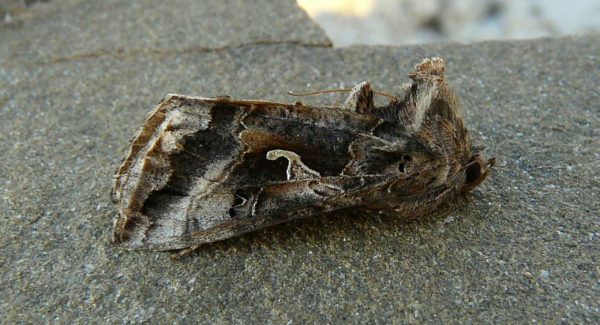
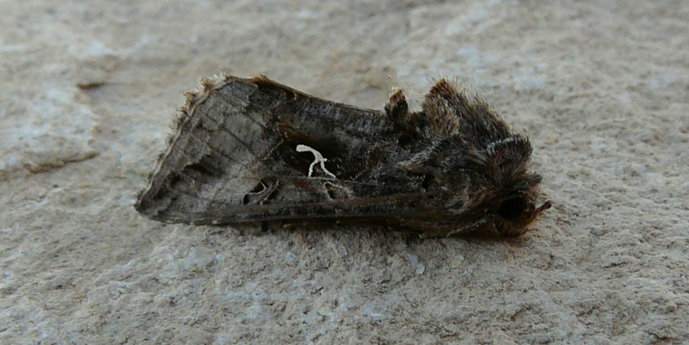
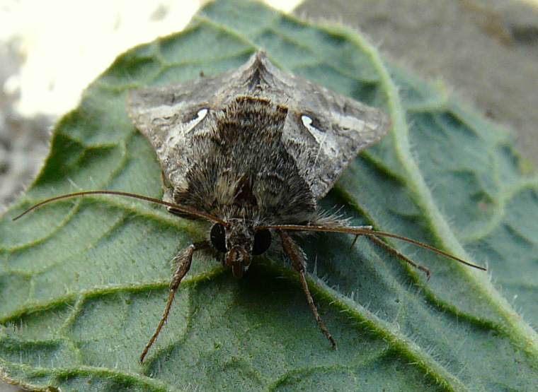
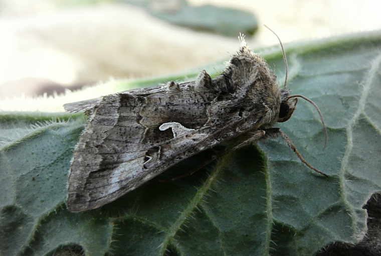
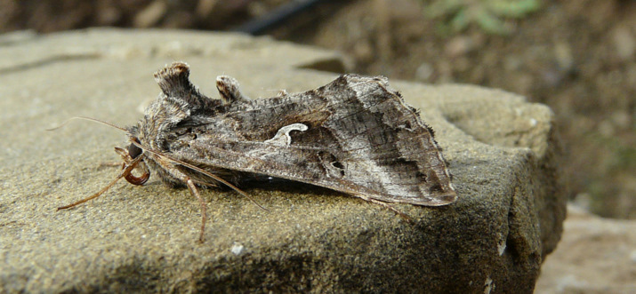
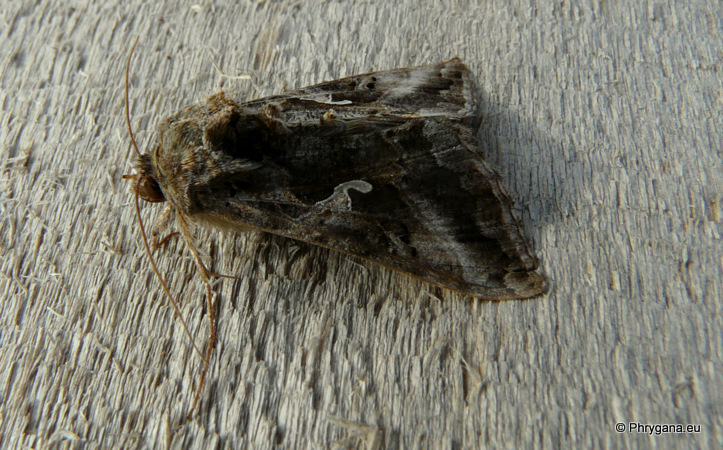
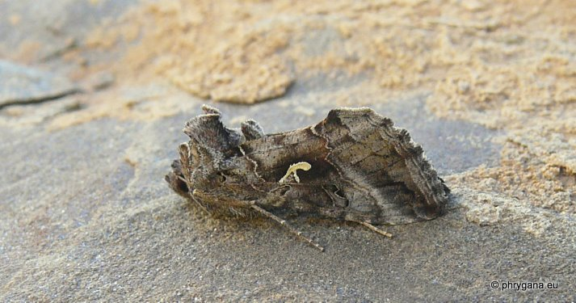

| PHRYGANA | Fauna | Flora |
additions nouveautés |
espèces species |
contact -
info - commentaires phrygana1 (at) gmail.com |
| Particularités crétoises | Galles et mines |
| Autographa gamma (Linnaeus 1758) |
| 94 | Fauna | LEPIDOPTERA | NOCTUIDAE | Plusiinae | Autographa Linnaeus 1758 |
 Autographa gamma Melambes (Agios Giorgos) 09 janvier 2010 |
| en: Silver Y fr: le Gamma |
| Envergure: 28 - 40 mm. Un 'gamma' blanc au milieu de l'aile antérieure; couleur de fond variant du brun grisâtre au brun foncé |
| Chenille: polyphage vorace: Brassicaceae, Asteraceae, plantes maraîchères |
| Espèce plurivoltine. |
| Période de vol: janvier février mars mai juin août septembre décembre |
| Statut en Crète: indigène -- native |
| Biotopes en Crète: phrygana, olivaies, garrigue, champs cultivés, bords de chemins. |
| Distribution: Europe méridionale, Afrique du Nord, Moyen-Orient. Devenu cosmopolite. |
| Note: espèce nuisible dans les cultures maraîchères |
|
 Autographa gamma Melambes (Agios Giorgos) 13 mars 2010 |
|
 Autographa gamma Melambes (Agios Giorgos) 23 février 2010 |
|
 Autographa gamma Melambes (Agios Giorgos) 23 février 2010 |
|
 Autographa gamma Melambes (Agios Giorgos) 16 janvier 2010 |
|
 Autographa gamma Melambes (Agios Giorgos) 26 novembre 2010 |
|
 Autographa gamma Melambes (Agios Giorgos) 27 novembre 2011 |
| 16 décembre 2011 |
| © paul fontaine -- © Phrygana.eu 2007 -- 2013 |